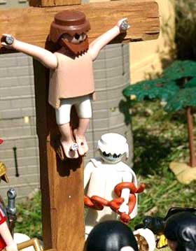

Sunday, April the 5th, 2009
back to: title, date or indexes
“It's true that I did use a hairdryer to soften the figure for the crucifixion scene because the fingers wouldn't spread out properly otherwise. Then I had to let it harden again before I could nail it to the cross.”
Gosh, how often have I said the very same thing? The Freethinker is on the case.
